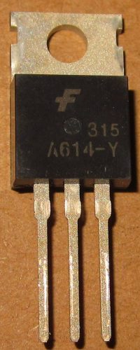
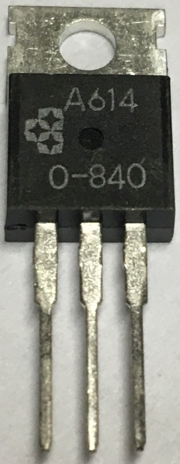
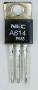
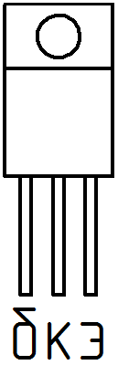

Транзистор KSA614
Транзистор KSA614 - кремниевый транзистор биполярный, низкочастотный, структуры p-n-p.
Корпус: TO-220
Обозначение на корпусе транзистора KSA614 часто наносится без первой цифры и буквы, т.е. маркируется как "A614".




Таблица 1
| Параметр | Значение |
|---|---|
| Напряжение коллектор-эмиттер, не более | 55 В |
| Напряжение коллектор-база, не более | 80 В |
| Напряжение эмиттер-база, не более | 5 В |
| Ток коллектора, не более | 3 А |
| Рассеиваемая мощность коллектора, не более | 25 Вт |
| Обратный ток коллектора | 50 мкА |
| Коэффициент усиления транзистора по току (h21э) | |
| KSA614R | 40...80 |
| KSA614O | 70...140 |
| KSA614Y | 120...240 |
| Предельная температура p-n-перехода | 150 °C |
| Корпус | TO-220 |
Условные обозначения электрических параметров транзисторов
Источники:
radiolibrary.ru - Транзистор KSA614